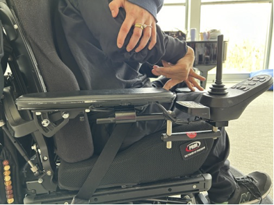
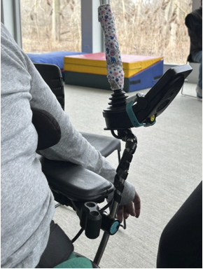
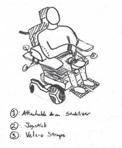
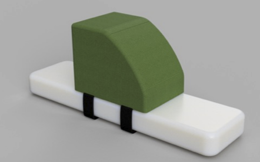
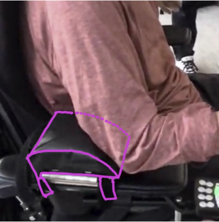
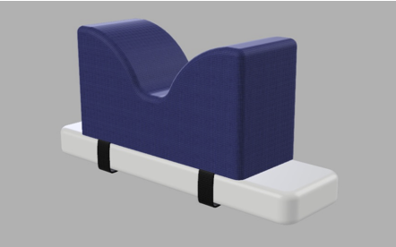
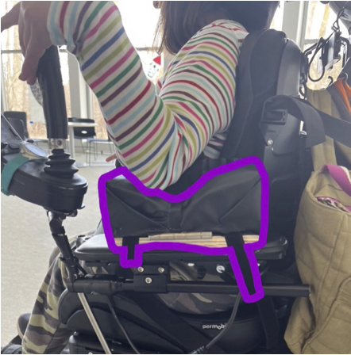
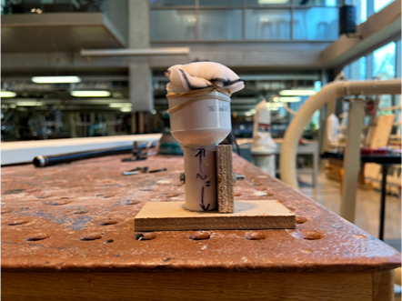

Promoting Wheelchair User Safety and Independence
The Northern Suburban Special Recreation Association (NSSRA) approached me and my classmates with a simple issue: two of their participants who use power wheelchairs—Dane and Rachel—were, in their own words, bad drivers.
It wasn't their fault, of course. Dane and Rachel both have cerebral palsy, which makes it difficult for them to finely control their hand and arm movements. Meanwhile, their wheelchairs, which are supposed to be an extension of their bodies and promote their independence, were not designed for their needs.
After meeting and speaking with Dane and Rachel, my team and I noticed that when operating their wheelchairs, to access the joystick, they had to hold their arms in unnatural, unsupported positions. This led to accidental movements, and the "bad driving" that NSSRA had described.

Dane (user) unable to place arm on wheelchair armrest

Rachel (user) unable to place arm on wheelchair armrest
The Attachable Arm Stabilizer
Our design, the Attachable Arm Stabilizer, is a customized cushion for users' driving arms. The Stabilizer also features two Velcro straps that allow for easy attachment to Dane and Rachel’s current armrests.
The Stabilizer was designed to meet three main requirements:
- Independence,
- Accessibility & Ease of Use
- Durability & Maintenance
A complete design report for the Attachable Arm Stabilizer can be found here .

Sketch of Dane’s Stabilizer
Design Requirements & Decisions
User Independence
The Stabilizer supports the driving arm so users can maintain joystick control without holding their arm up manually, reducing accidental movement and fatigue.
Quick Attachment
Flexible Velcro straps let the Stabilizer attach to most standard wheelchair armrests in seconds, making it easy for users and caregivers to install.
Comfort & Safety
The foam cushion is soft yet stable, delivering comfortable arm support while preserving range of motion and improving driving confidence.

Render of Dane's Prototype

Annotated Photo of Dane's Prototype

Render of Rachel's Prototype

Annotated Photo of Dane's Prototype
My Contributions
Prototype Fabrication
Early in my engineering career, I learned how to use tools for manipulating both hard and soft materials to produce proof-of-concept prototypes.

Design Sketches
I prepared napkin sketches both for communicating ideas during the project and for later polishing and use in the final report.
User Research
I spoke with our end users and other participants at the NSSRA to learn about how they interact with their mobility aids, and how those mobility aids interact with their surrounding environment.